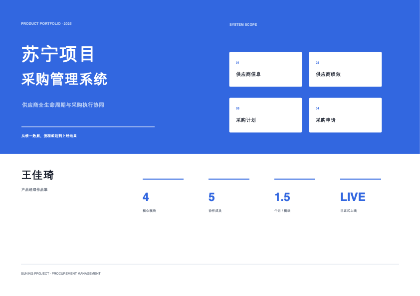
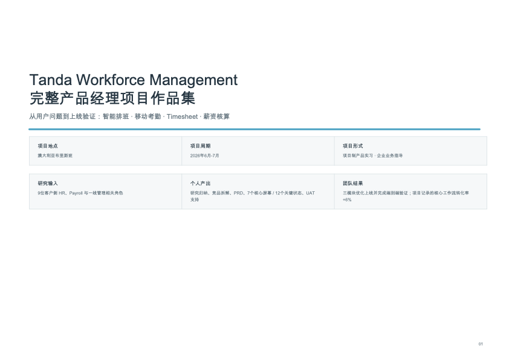

点击在线预览 ↗ 01B2B · PROCUREMENT DIGITALIZATION苏宁采购管理系统让采购过程更透明，协作更顺畅围绕企业采购全流程，梳理供应商、商品、寻源及采购执行等核心场景，把复杂业务规则转化为清晰、可执行的系统体验。业务洞察流程设计B 端产品在线预览 ↗下载 PDF ↓
点击在线预览 ↗ 02SAAS · WORKFORCE MANAGEMENTTanda 排班与工时管理把复杂的人力调度变得直观高效深入管理者与员工的真实工作场景，优化班次创建、人员安排及工时查看流程，降低高频排班操作的认知与执行成本。用户研究交互设计SaaS在线预览 ↗下载 PDF ↓